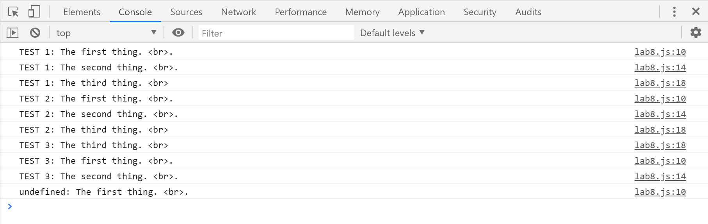

Lab 8: Anon Functions and Callbacks
Challenges and Problems
One specific challenge was to get the functions organized for the anonymous function and arguments to fit in the right parameter. Another challenge was for the setTimeout(function() script used for a button interactivity in the index.html file taken from w3schools (https://www.w3schools.com/jsref/tryit.asp?filename=tryjsref_win_settimeout and https://www.w3schools.com/howto/howto_css_animate_buttons.asp) was to check and see if the timing of the parameter worked on the console. It showed that the first function was undefined.
Results
The results are located in the image on the right hand of the screen. Another way is to right click and press on "Inspect" and go to the "Console" menu. To test another function, click on the below and see if the results to the first test is undefined.